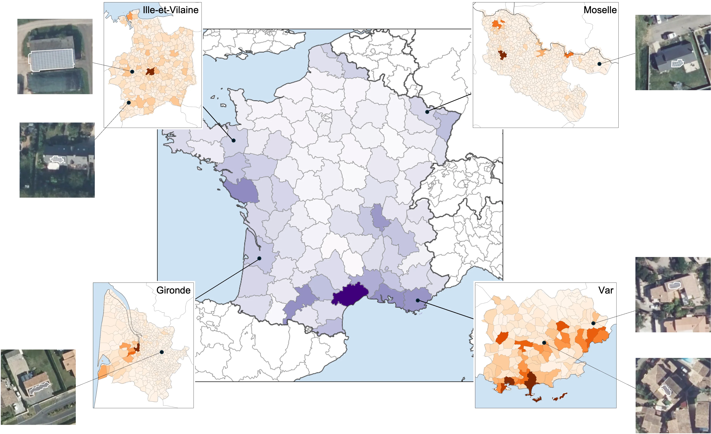

3.Déploiement
Le pipeline est ensuite déployé sur toute la France, département par département. Cartographier un département prend environ 6 à 10 heures, selon sa taille et le matériel disponible. Le principal goulot d'étranglement est le prétraitement des tuiles d'images en vignettes. Les détections départementales brutes sont ensuite post-traitées et fusionnées en un seul fichier.
10 départements avaient été cartographiés en 2022, et 38 en avril 2024. La première cartographie complète de la France a été achevée en 2024, à partir d'images acquises entre 2018 et 2023. Plusieurs départements ont depuis été cartographiés trois à quatre fois, ce qui crée un jeu de données dynamique permettant d'étudier les dynamiques de déploiement et les effets de voisinage.
La première version du jeu de données, en juillet 2026, a été produite sur les images IGN les plus
récentes disponibles à l'époque, couvrant 2022 à 2025. L'IGN mettant à jour ses images au fil de
l'eau, le jeu de données est conçu pour être régulièrement actualisé. Au total,
tous les départements sauf 4 avaient été couverts au moins deux fois par
DeepPVMapper, ce qui permet de calculer un attribut first_seen dans OpenPVMapper en
fusionnant les détections de plusieurs millésimes d'imagerie.
La publication sur Zenodo comprend le fichier de couverture le plus récent, obtenu en fusionnant la cartographie la plus récente de chaque département. Elle comprend aussi toutes les détections départementales brutes, couvrant à la fois les millésimes d'imagerie récents et antérieurs.
La version actuelle du jeu de données (juillet 2026), qui ne comprend que les détections issues des images IGN les plus récentes, contient 589 623 installations, soit 2,9 GWc de puissance installée. L'imagerie couvre de 2022 à 2025.
